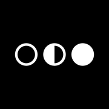
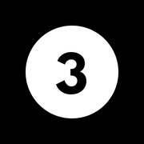
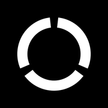

str3ak
3 opciones de logo

str3ak

str3ak

str3ak
1 · toca, a medias, hecha
los 3 estados del círculo
2 · el 3
el círculo de «hecha» con el 3 de str3ak
3 · 3 de 3
el aro partido en 3: las 3 de hoy